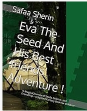
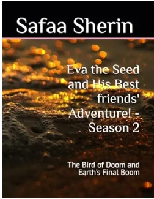

Welcome to the official website of my releases! Here, you can explore my published books, creative projects, achievements, and writing journey. As a young author, I am passionate about creating stories and poetry that inspire imagination, creativity, and self expression 🤗
The Universe of My Life's Rhythm is my very first rap-poetry collection, created for teenagers and young readers. Inside, you'll find rhythm, emotions, dreams, thoughts, challenges, and plenty of creativity packed into one book. 🎶✨ This book is extra special to me because it became part of my record journey! 🏆 It was recognized by IBOR under the title "Young Author to Publish a Rap-Poetry Hybrid for Teenagers on Amazon." The official documentation is still being processed, so stay tuned! 😎
Join Eva, a brave little seed, and his best friends on an exciting adventure filled with friendship, teamwork, discovery, and valuable life lessons. This story encourages young readers to dream big, stay kind, and enjoy the wonders of nature. But if you've already read that and expected a more intense story,I would introduce you to a more exciting, thrilling, adventurous story ever.. That is..

The journey continues as Eva and his friends face new challenges, explore new places, and create unforgettable memories together. Season 2 brings even more adventure, excitement, and positive messages for young readers. Even readers who didn't read season 1 can read this. BUT, expect a lot of earth level dangers, Eva's both laziness and heroism doing the work to save the world, etc.🏴☠️

Writing is more than a hobby for me—it's a passion. Through every book and project, I continue learning, creating, and sharing ideas with readers around the world. Thank you for visiting and supporting my journey as an author. Expect my next release to be labelled as "Neha the flower and Her Best Friends' Adventure" the finale of the sequel "Eva the seed and his best friends' adventure- Season 2". 😉
Every reader, supporter, and visitor means a lot to me. Thank you for being part of this adventure and helping me continue creating new stories, poems, and projects. More surprises are on the way! 🚀📚✨